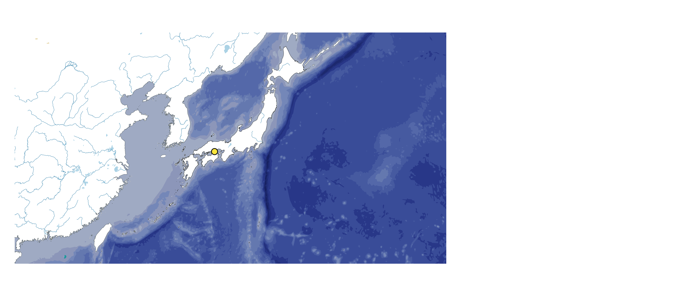
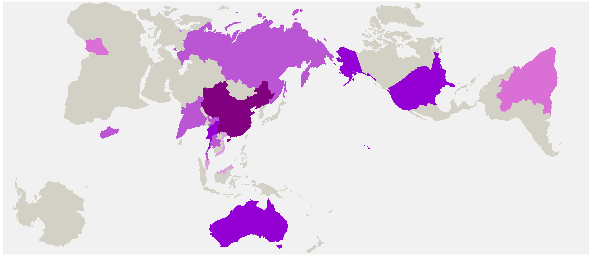
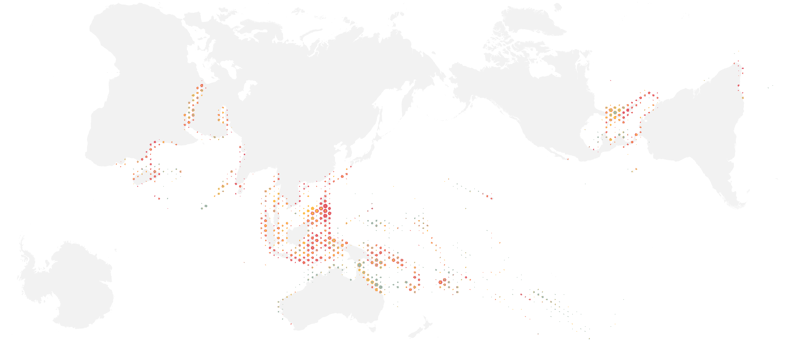
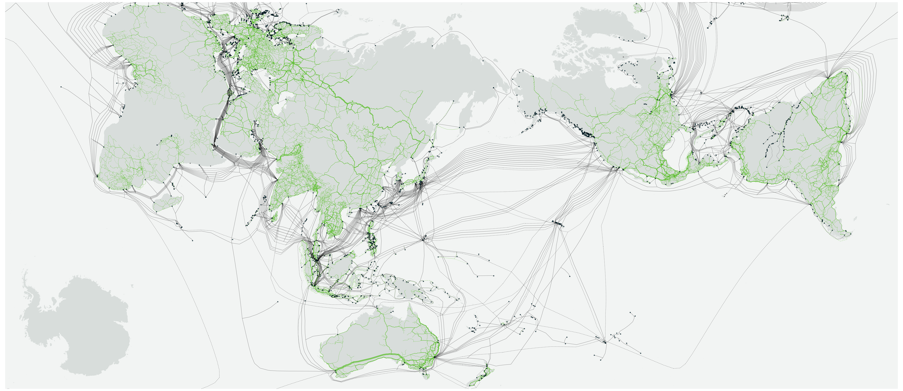

WordPress page 3175 · local content preview
Cartofreako × Setouchi
A proposal by Benjamin De Kosnik for Setouchi Triennale 2028.
Cartofreako is a tool to approach the world and learn, design, and anticipate possible futures. Cartofreako × Setouchi proposes a public atlas studio: a place to read maps, exchange knowledge and make new work with residents and visitors.

Two atlases, one shared table
The Japan and World atlases each contain 36 subjects, with a separate legend and source sheet after every map. They connect the Seto Inland Sea with communications networks, media circulation, atmosphere, oceans, food, energy and minerals from around the world. At the studio table, discussion and drawing turn these references into questions and possible futures.
Download the Japan Atlas · Download the World Atlas · Read the ten-page proposal
Atlas edition: 1 November 2026. Each volume has 75 pages. Full-size map sheets are 111.76 × 48.39 cm. Maps retain their own observation dates; they are not live measurements.
A flexible installation
Six world/Japan map pairs, reading and making tables, and a growing display of workshop material form the proposed installation. Awashima is the preferred autumn setting, with the room and local programme to be developed with the festival and a host. The design can be adapted to other agreed venues.
Hamonshu Revisited
Discuss and classify the wave and ripple patterns in Mori Yūzan’s 1903 Hamonshū, then make new patterns over study copies of the Water plate. Drawing, print and washi experiments connect historical visual language with a contemporary atlas.
Dymaxion and AuthaGraph
A proposed conversation with Hajime Narukawa about AuthaGraph, R. Buckminster Fuller’s legacy and AI-assisted cartography. Folding and tracing exercises invite participants to explore how a map changes what we notice.

Ocean Changes and Climate
Read coral, water and temperature maps with invited specialists and local participants. Compare the questions people bring with what each source can show, then identify new observations or collaborations to pursue.

Video Common Market Revisited
A proposed discussion with Lisa Nakamura and Abigail De Kosnik begins with the circulation of Japan-origin media. Maps of fiber-optic cables, cloud/CDN records, Starlink groundstations, satellites and network swarms reveal subjects for collective inquiry.

An open invitation
Residents, visitors and other interested parties can propose topics and help shape additional sessions. The installation grows through annotated maps, questions and paper experiments, with participants choosing what to share.
Proposed production consultations include Tomiyoshi Tsukada in Nagano for printing, Hajime Narukawa / AuthaGraph for cartography, and Awagami for washi. Collaborator participation, venue and programme are to be agreed.
Artist
Benjamin De Kosnik holds an MFA in Studio Art from California College of the Arts and a BA in Mathematics from the University of Texas at Austin. His supplied CV includes exhibitions at 500 Capp Street, Beursschouwburg and Hong Kong Open Printshop, and the Special Jury Prize at the 2011 Tokyo Screen Print Biennial.
Project context: Setouchi Triennale 2028 official call. Source references and dates accompany the atlas maps and the application PDF.